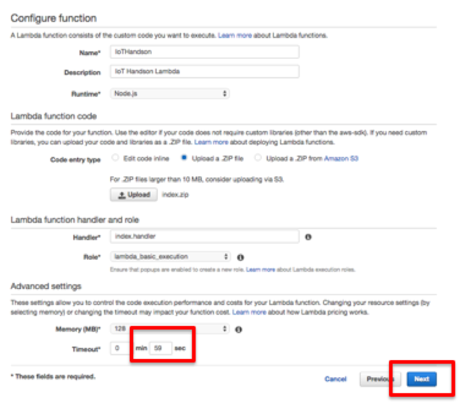

5. AWS Lambdaの設定¶
5.1. コードの修正¶
以下のサイトからコードをダウンロードします。
zipをunzipなどで解凍します。 index.jsのノートパッドなどのツールで開きます。
1 |
|
var moment = require(‘moment’); var APP_ID = ‘<<アプリID>>’; var SUBDOMAIN = ‘<<サブドメイン>>’;
- exports.handler = function(event, context) {
var dueDate = moment().add(1, ‘d’).format(‘YYYY-MM-DD’); var acceptNum = moment(); console.log(dueDate);
- record = {
- ‘受付番号’: { value: acceptNum }, ‘タイトル’: { value: event.title }, ‘インシデント’: { value: ‘アラート’ }, ‘作業期限’: { type: ‘DATE’, value: dueDate }, ‘内容’: { value: event.value }
};
- request({
method: ‘POST’, url: “https://” + SUBDOMAIN + “/k/v1/record.json”, headers: {
‘X-Cybozu-Authorization’: ‘<<Auth情報>>’, ‘Authorization’: ‘Basic <<Auth情報>>’, ‘Content-Type’: ‘application/json’}, json: {
‘app’: APP_ID, ‘record’: record
} }, function(err, response, body) {
- if (err) {
- consle.log(“err : ” + util.inspect(err));
} if (response.statusCode === 200) {
console.log(‘RESULT: ‘); context.succeed();- } else {
- console.log(“response error: ” + response.statusCode + ”, ” + err); console.log(“response error: ” + body.message);
}
});
};
アプリIDアプリ、サブドメイン(cybozu.comまで含む)、Auth情報(同一のデータ)を編集して、保存します。
編集後、AWS Lambdaにコードをアップロードするためにサイドzipで圧縮します。
$ zip -r index.zip index.js node_module
5.2. AWS Lambdaの設定¶
AWS Lambdaのコンソールをサービス一覧から選択し、起動します。 改めて東京リージョンであることを確認してください。 “Create a Lambda Function”を選択します。

Select blueprintは、スキップします。

Configure Function画面で名前の入力などを行います。Uploadボタンをクリックし、上記で作成したZipファイルを選択します。 RoleのリストからBasic execution roleを選択します。

ロールを作成する画面に遷移するので、内容を確認して、”許可”ボタンをクリックします。

画面が元のConfiguration Functionに戻り、Timeoutを59秒にして、”Next”ボタンをクリックします。
確認画面で確認して、”Create Function”をクリックします。

5.3. AWS IoTのルール設定¶
Lambdaの登録が終わったので、先ほどのSNSと同様の手段で、Lambdaを設定します。 手順は、SNSとほぼ同等で、Lambdaを選択する部分のみことなります。
これで準備は整いました。 SNSの時と同様10秒単位でセンサーデータがAWS IoTにPublishされてます。 設定がうまく行っていれば、kintoneの障害対応アプリ内にデータが蓄積されます。